iTest User's Guide
Procedures are programming code or script used to run iTest applications. They are written in the VCL scripting language and can be executed from numerous sources including other procedures, actions, and virtual controls defined in displays. You can create new procedures and write procedure code in SolutionBuilder's Procedures editor. To access this editor, select Tests > Procedures in the main menu. For more information on the VCL scripting language and supported functions, see the VCL guide.
The Procedures editor contains four sections: the list of groups and procedures, the helper bar, the editor, and the build output bar.
Procedures Editor
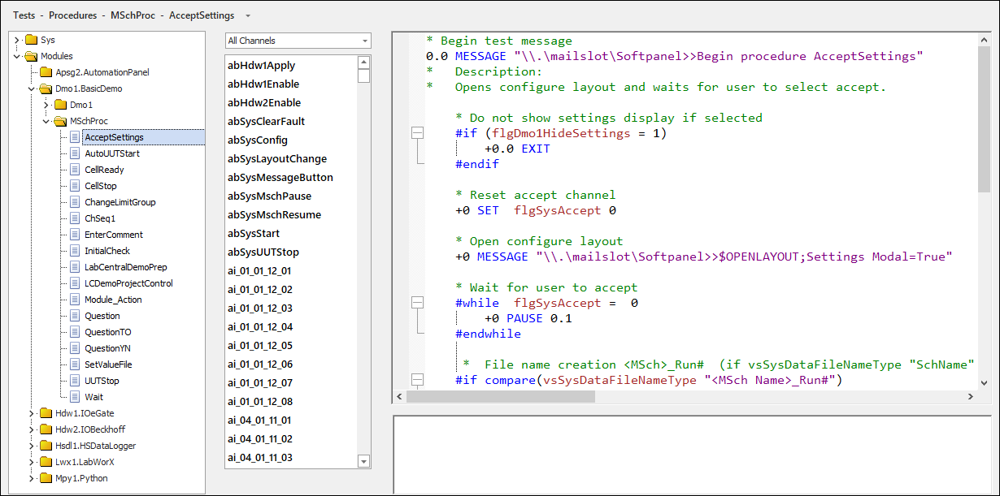
The following options are available when you right-click in the list of procedures:
Right-Click Edit Options
| Option | Description | Notes |
| Add | Adds a new procedure to a group. | - |
| Remove | Removes the selected procedure from a group. | - |
| Rename... | Launches the Rename dialog to change the name of the procedure or procedure group. | For BTS systems, this option is only available when you right-click on the procedure name. |
| Duplicate | Duplicates a selected procedure and appends a numeric value to the name of the procedure (e.g., UserFileName3). | - |
| Add Group... | Adds a new procedure group, which can be used to help organize and categorize your procedures. Empty groups are not retained in-between saves. | This option is only available for non-BTS systems. This option is disabled if the SolutionBuilder.xml contains <ProcedureFolders> settings; refer to the Procedure Folders documentation for more information. |
| Cut | Removes a procedure and copies it to the clipboard. | This option is only available when right-clicking on a procedure name. |
| Copy | Copies a procedure. | - |
| Paste | Pastes a copied/cut procedure. | - |
| Undo | Undoes the last action. | - |
| Redo | Redoes the last undone action. | - |
| Include This Folder | Includes all procedures within the folder in the test build, and iTest checks the files for errors during the build. These procedures will be available for use in iTest. An included folder is indicated by a yellow folder icon. | This option is only available when right-clicking on a procedure folder. |
| Exclude This Folder | Excludes all procedures within the folder in the test build, and iTest will not check the files for errors during the build. These procedures will not be available for use in iTest. An excluded folder is indicated by a gray slanted folder icon. | This option is only available when right-clicking on a procedure folder. |
| View Hierarchy... | Opens the View Hierarchy dialog. This dialog displays the procedures that are executed or spawned from within the selected procedure and the order in which they are called. | - |
| Properties... | When right-clicking on a procedure name, the Procedures Properties dialog launches. This dialog can be used to specify the procedure priority level and add arguments. See the Procedure Properties section for more information. When right-clicking on a procedure folder, the Procedure Settings dialog launches. This dialog can be used to specify the Startup, Soft Stop, and Exit procedures. See the Procedure Settings section for more information. |
- |
The following options are available when you right-click in the editor:
Right-Click Edit Options
| Option | Description | Shortcut Key |
| Cut | Removes the selected text from the editor and copies it to the clipboard. | CTRL + X |
| Copy | Copies selected text in the editor. | CTRL + V |
| Paste | Pastes copied/cut text in the editor. | CTRL + P |
| Find... | Launches the Find and Replace dialog with the Find tab displayed. | CTRL + F |
| Replace... | Launches the Find and Replace dialog with the Replace tab displayed. | CTRL + H |
| Toggle Whitespace | Turns whitespace markings on/off. | CTRL + W |
| Make Uppercase | Makes selected text uppercase. | CTRL + SHIFT + U |
| Make Lowercase | Makes selected text lowercase. | CTRL + U |
| Comment | Comments out a line of text in the procedure. Text does not need to be selected or highlighted to comment it out. | - |
| Uncomment | Uncomments a line of text in the procedure. | - |
| Undo | Undoes the last action. | CTRL + Z |
| Redo | Redoes the last undone action. | CTRL + Y |
| Open Procedure | Opens the procedure based on the text that was clicked on. If the text clicked on is not a name of a procedure, then a dialog displays indicating that SolutionBuilder cannot find the procedure. The procedures that can be opened via this right-click option are limited to the list of procedures found in the left pane. | - |
| Next Bookmark | Navigates to the next bookmark in the procedure. | F2 |
| Previous Bookmark | Navigates to the previous bookmark in the procedure. | Shift + F2 |
| Preferences... | Launches the Editor Properties dialog, which enables you to modify the appearance of the editor. You can customize the font style and size, display line numbers, and enable outlines for blocks of code. | - |
You can organize procedures by using Procedure Groups. To create a procedure group, do the following:
After you enter a new name for the group, the new group will display as a section in the procedures list. You can then add new procedures to the group.
Add Procedures to Group
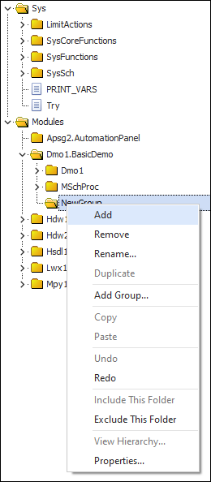
You can easily organize your groups by dragging and dropping procedures from one group to another. To move procedures between groups, click the name of the procedure you want to move, drag it over top of the new group you want to add it to, and then release the mouse.
Move Procedures Between Groups
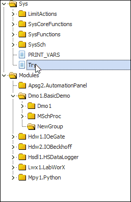
You can bookmark lines within a procedure by clicking the line in the left-side margin. Bookmarking allows you to mark lines within the editor and then quickly navigate to them. After setting a bookmark, navigation is performed using the available right-click menu options Next Bookmark and Previous Bookmark or their associated hot keys.
Bookmark Lines
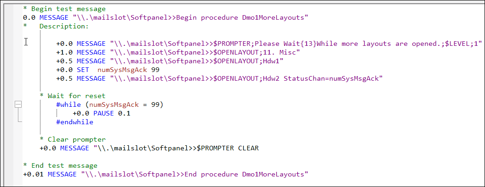
If there are any test build errors while building the solution, then these errors will display in the Build Output Bar at the bottom of the Procedures editor. In addition, any procedures that contain errors will display in red font in the list.
Example: Procedure with Errors
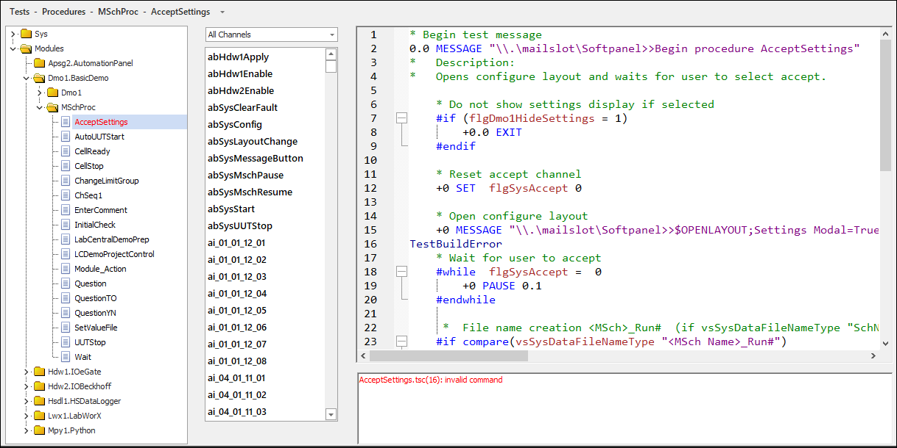
The Find and Replace dialog allows you to search all procedures in order to find and replace keywords or channels.
To launch the Find and Replace dialog, press Ctrl + F.
Find and Replace Dialog
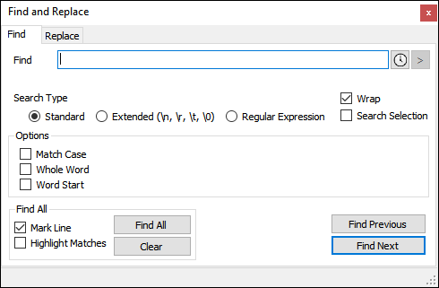
The Replace tab allows you to replace found instances using the Replace Previous, Replace Next, and Replace All functions.
Replace Tab
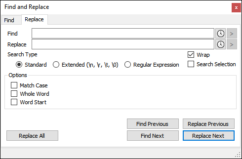
Find and Replace Dialog Descriptions
| Value | Description |
| Find | Term being searched for. |
| Replace | Term to replace all found instances. |
| Search Type | The type of search you would like to conduct. Each type has corresponding search options defined in the Options field. Types include Standard, Extended, and Regular Expression. |
| Options | Optional search conditions. Options depend on your Search Type selection. |
| Find All | Finds all instances. |
| Mark Line | Bookmarks the procedure line containing the search result. |
| Highlight Matches | Highlights all matches found in the search. |
| Clear | Clears existing indications made through the Mark Line or Highlight Matches selections. |
| Replace All | Replaces all found instances. |
| Find Previous/Find Next | Finds the previous or next instance. |
| Replace Previous/Replace Next | Replaces the previous or next instance. |
The Procedure Properties dialog allows you to add, delete, and define arguments for your procedures.
To launch the Procedure Properties dialog, right-click a procedure and select Properties.
Properties
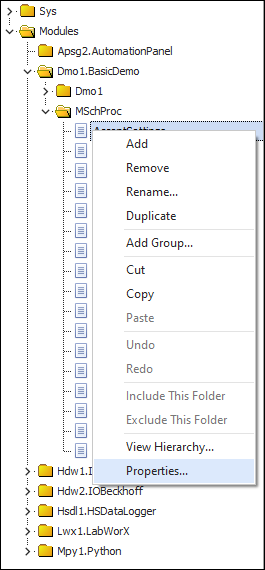
The Procedure Properties dialog will launch in a new window.
Procedure Properties Dialog
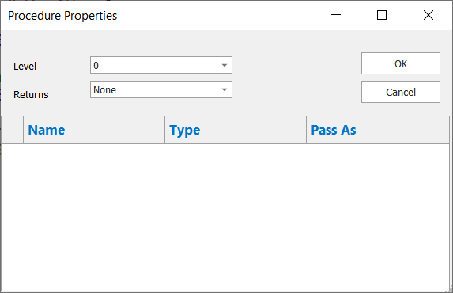
To add a new argument, right-click in the dialog and select Add to End. You can add up to ten arguments per procedure.
Add to End
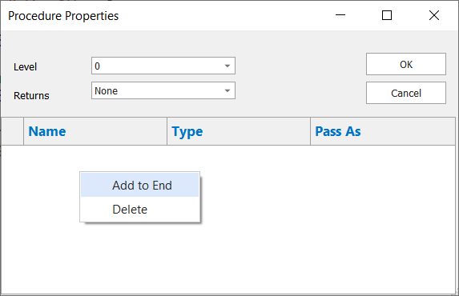
Procedure Properties Dialog Descriptions
| Value | Description |
| Level | Defines the procedure’s priority level. Zero is the lowest priority, nine the highest. |
| Returns | Defines whether the argument returns a Number, String, or None. |
| Name | The name of the argument. Double-click this field to edit. |
| Type | The type of argument the function is expecting: Number, String, ArrayNum, or ArrayStr. ArrayNum and ArrayStr can only be passed as a Channel. |
| Pass As | Defines whether the argument will be passed as a Value, Local Variable, or Channel. |
For more information on VCL procedure arguments, refer to the following document on Argument Types.
The Procedure Settings dialog, available by right-clicking on a procedure folder in the procedure list and selecting Properties..., allows you to select the Startup, Soft Stop, and Exit procedures. These types of procedures are described in the table below. Use the drop-down menu in each field to select the procedure.
Procedure Settings Dialog
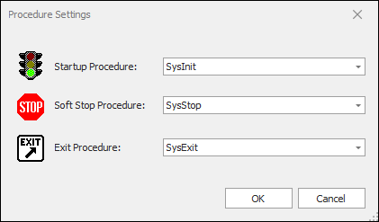
Procedure Setting Descriptions
| Setting | Description |
| Startup Procedure | Indicates the procedure that runs when iTest starts. Only one Startup procedure can be selected. |
| Soft Stop Procedure | Indicates the procedure that runs when you stop a test on iTest. Only one Soft Stop procedure can be selected. |
| Exit Procedure | Indicates the procedure that runs when the user exits iTest. Only one Exit procedure can be selected. |